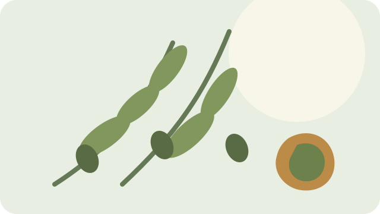
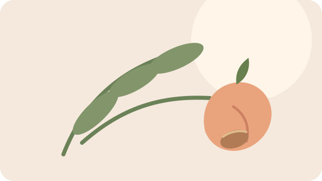
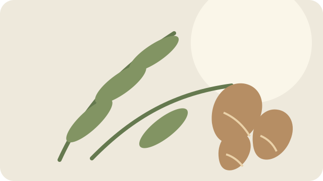
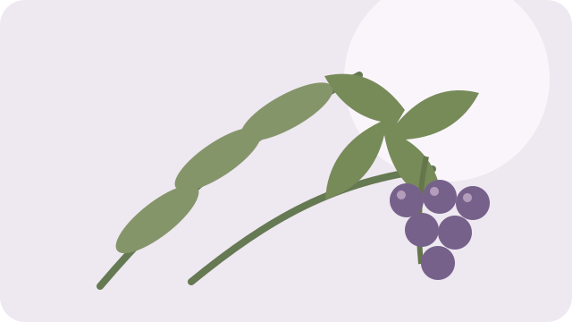
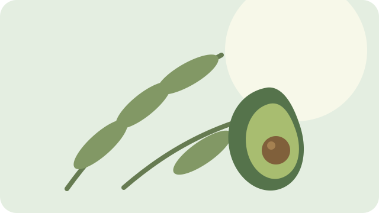
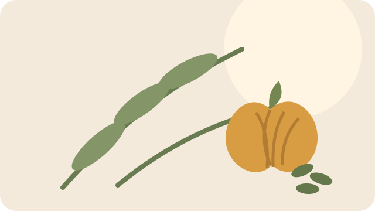
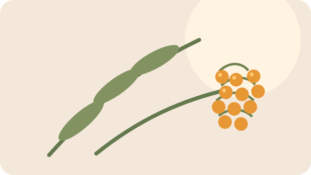

Обычная пищевая пластиковая тара — это нормально: берегите масло от света, тепла и воздуха, а условия с этикетки ставьте на первое место.
Уберите от солнца. Держите бутылку в тёмном шкафу, не на подоконнике.
Избегайте нагрева. Не ставьте рядом с плитой, духовкой или батареей.
Плотно закрывайте крышку. Не доливайте новое масло в остатки и не используйте бутылку повторно.
Следуйте маркировке. Срок после вскрытия и необходимость холодильника зависят от конкретного масла и указаний производителя.
01Средиземноморье

Оливковое масло
Яркий мононенасыщенный профиль и широкая вариативность вкуса в зависимости от сорта и степени созревания оливок.
Ключевые кислоты
Олеиновая, линолевая, пальмитиновая
Получение
Механическое прессование мякоти плода
Подробнее об масле
В нерафинированном масле могут сохраняться фенольные соединения и токоферолы. Вкус меняется от травянистого и зелёного до мягкого и сливочного. Для точной характеристики конкретного образца важны сорт оливок, способ измельчения пасты, температура и длительность хранения.
При выборе смотрят на категорию продукта, урожай, дату розлива и условия хранения. Надпись «extra virgin» относится к определённым стандартам качества и не заменяет сведения о происхождении и партии.
02Косточковые

Персиковое масло
Масло из косточек персика с типичным сочетанием олеиновой и линолевой жирных кислот.
Ключевые кислоты
Олеиновая, линолевая, пальмитиновая
Получение
Холодное прессование или экстрагирование
Подробнее об масле
Конкретный состав зависит от сорта персика и технологии. В косметических и технических применениях разделяют рафинированное и нерафинированное масло. Пищевое применение допустимо только при наличии соответствующей маркировки и разрешённых нормативов партии.
Проверяйте, из какой части сырья сделано масло, как оно очищено и для какого способа применения предназначено. Один и тот же бытовой термин на этикетках разных продуктов не гарантирует одинаковую технологию.
03Семена
Подсолнечное масло
Один из самых распространённых типов растительного масла с несколькими сортовыми профилями.
Ключевые кислоты
Линолевая или олеиновая
Типы
Линолевый и высокоолеиновый
Подробнее об масле
Обычный профиль подсолнечного масла часто содержит заметную долю линолевой кислоты. У высокоолеиновых сортов преобладает олеиновая. Конкретный тип и результаты анализа важнее обобщённой категории на этикетке.
Для разных задач выбирают масла с учётом их вкуса, обработки и заявленного назначения. Слова «холодный отжим» описывают этап производства, но сами по себе не подтверждают свежесть или качество партии.
04Ореховые

Миндальное масло
Масло с нежным ореховым характером и заметной долей мононенасыщенных жиров.
Ключевые кислоты
Олеиновая, линолевая, пальмитиновая
Типично содержит
Токоферолы и минорные липиды
Подробнее об масле
Миндальное масло получают из ядра плода миндаля холодным отжимом или иным технологическим способом. Нерафинированный продукт сохраняет больше аромата и чувствительнее к свету, теплу и кислороду. Он относится к продуктам с потенциальной ореховой аллергенностью.
Для хранения подойдут закрытая непрозрачная упаковка и прохладное место вдали от нагревательных приборов. Обращайте внимание на вид сырья, степень очистки, назначение продукта и предупреждение об аллергенах: масло для наружного применения нельзя автоматически считать пищевым.
05Из семян

Масло виноградной косточки
Лёгкое масло семян винограда с типично высоким содержанием линолевой кислоты.
Ключевые кислоты
Линолевая, олеиновая
Особенность
Высокая доля полиненасыщенности
Подробнее об масле
Качество зависит от сорта винограда, влажности и срока хранения семян до обработки. Масло чувствительно к нагреву, свету и кислороду; в технических и кулинарных применениях учитывайте температуру и способ получения.
Семена дают сравнительно небольшой выход масла, поэтому на рынке представлены продукты разной степени очистки. Уточняйте пищевое или косметическое назначение, а также условия хранения после вскрытия.
06Тропики

Масло авокадо
Масло мякоти плода с заметной долей олеиновой кислоты и выраженным зелёным профилем.
Ключевые кислоты
Олеиновая, линолевая, пальмитиновая
Источники
Мякоть плода или семя
Подробнее об масле
Состав масла из мякоти нельзя переносить на масло из семени. Нерафинированные образцы могут сохранять хлорофилл и пигменты мякоти. Для конкретной партии полезны цвет, аромат, дата производства и лабораторные показатели.
В карточке товара важно отдельно указать часть плода, способ получения и рафинацию. Эти сведения помогают отличить пищевое масло от сырья для косметических составов.
07Косметическое
Масло жожоба
Не триацилглицеринное масло, а жидкий восковой эфир с высокой устойчивостью к окислению.
Основной состав
Жидкие восковые эфиры
Применение
Косметика и уход за кожей
Подробнее об масле
В отличие от большинства растительных масел, жожоба состоит преимущественно из эфиров длинноцепочечных жирных кислот и спиртов. Поэтому её не следует приравнивать к пищевым триацилглицериновым маслам. Косметические продукты нужно выбирать с учётом маркировки.
В косметике жожоба используют как самостоятельный ингредиент или основу смеси. Перед использованием готового средства ориентируются на инструкцию производителя и индивидуальную переносимость.
08Твёрдые жиры
Масло какао
Твёрдый растительный жир с характерным узким диапазоном плавления и высокой долей насыщенных кислот.
Ключевые кислоты
Стеариновая, олеиновая, пальмитиновая
Форма
Твёрдая при комнатной температуре
Подробнее об масле
Соотношение жировых фаз определяет твёрдость и плавление масла какао. Термостатическая обработка и полиморфизм кристаллов особенно важны в кондитерских технологиях.
Аромат и оттенок зависят в том числе от подготовки бобов. В составе готового продукта могут быть смеси и добавки, поэтому проверяйте полный перечень ингредиентов и область применения.
09Тропическое
Кокосовое масло
Растительный жир с высокой долей среднецепочечных и насыщенных жирных кислот.
Ключевые кислоты
Лауриновая, миристиновая
Особенность
Быстрое твёрдение при охлаждении
Подробнее об масле
Каприловая и каприновая кислоты в меньших долях также входят в типичный профиль. Температура плавления зависит от фракции и обработки. Продукт может называться рафинированным или нерафинированным в зависимости от технологии.
Твёрдое состояние в прохладной комнате и прозрачность в тепле могут быть естественным изменением консистенции. Сверяйте состав и назначение, поскольку свойства фракционированных продуктов отличаются.
10Зародыши
Масло зародышей пшеницы
Насыщенное минорными компонентами масло с высокой долей ненасыщенных кислот.
Ключевые кислоты
Линолевая, олеиновая, пальмитиновая
Минорные компоненты
Токоферолы и фосфолипиды
Подробнее об масле
Нерафинированное масло может отличаться цветом и запахом. Профиль конкретной партии зависит от сорта пшеницы, свежести сырья и технологии очистки. Масло чувствительно к окислению и требует бережного хранения.
Из-за особенностей сырья и ограниченного выхода продукт часто продаётся в небольших упаковках. Ищите на этикетке способ получения, дату розлива и рекомендации после открытия.
11Ореховые
Масло макадамии
Ореховое масло с высоким содержанием мононенасыщенных жирных кислот.
Ключевые кислоты
Олеиновая, пальмитолеиновая
Формат
Косметическое и пищевое
Подробнее об масле
Пальмитолеиновая кислота заметно отличает профиль макадамии от многих обычных растительных масел. Маркировка партии должна точно указывать область применения и способ получения.
Ореховое сырьё требует аккуратного указания аллергенов. Для сравнения продуктов учитывают степень очистки и то, предназначено ли масло для еды или косметического использования.
12Omega-3 / Omega-6
Масло грецкого ореха
Плодовый вкус и значительная доля полиненасыщенных жирных кислот делают масло особенно чувствительным к хранению.
Ключевые кислоты
Линолевая, альфа-линоленовая
Хранение
Холодно, без света и кислорода
Подробнее об масле
Полиненасыщенность влияет на вкус и скорость окисления. Масло лучше хранить в закрытой непрозрачной упаковке вдали от тепла. Оно относится к продуктам с высокой вероятностью ореховой сенсибилизации.
Вкус различается по сорту ореха и технологии прессования, а обработанное сырьё даёт более выраженный аромат. На этикетке ищите дату изготовления, условия хранения и предупреждения об аллергенах.
13Семена тыквы

Тыквенное масло
Насыщенный зелёно-коричневый цвет, яркий аромат и типичное сочетание линолевой и олеиновой кислот.
Ключевые кислоты
Линолевая, олеиновая
Минорные компоненты
Пигменты и фитоактивные фракции
Подробнее об масле
Цвет и вкус зависят от сорта тыквы, степени обжарки семян и способа отжима. Нерафинированные образцы используют для ароматных холодных подач и строго по указаниям производителя.
Тёмный цвет сам по себе не определяет сорт или качество. Сравнивайте свежесть, состав и технологию, а после открытия следуйте рекомендациям на упаковке.
14Плоды и семена

Облепиховое масло
Различается по сырью: масла мякоти плодов и семян имеют заметно отличающиеся цвет, состав и назначение.
Семенное
Линолевая и альфа-линоленовая
Из мякоти
Пальмитолеиновая фракция и пигменты
Подробнее об масле
Нельзя переносить свойства одной фракции на другую. Масло мякоти обычно ярче и плотнее по цвету, а семенное имеет иной жирнокислотный профиль. Способ производства и область применения всегда должны быть указаны на продукте.
В продаже встречаются чистые масла, смеси и экстракты. Уточняйте, из какого сырья сделан продукт и разрешено ли его пищевое применение: цвет не позволяет надёжно определить состав.